Introduction
"A landslide is the movement of a mass of rock, debris, or earth down a slope."
Landslides are one type of what geologists call "mass wasting"—any movement of soil and rock down a slope that moves as a mostly unified mass under the influence of gravity.
From 1990 to 2016, the North Carolina Geological Survey (NCGS) responded to more than 175 requests for assistance on landslide events from government agencies, the public, and consultants.
NCGS geologists have since investigated over 200 landslides in the Blue Ridge Mountains of western North Carolina. At the time of publication, these landslides have resulted in five deaths, destroyed more than 25 homes and damaged at least 40 others, and impaired nearly 80 roads.
Read on to learn more about the types of landslides, what causes them, and explore maps developed by NCGS to learn where landslides have occurred in the past and the potential for future risk. To explore historical landslides in the region, please visit Historical Landslides in Western North Carolina.
What is a Landslide?
A landslide is the movement of a mass of rock, debris, or earth down a slope. Landslides are one type of what geologists call "mass wasting"—any movement of soil and rock down a slope that moves as a mostly unified mass under the influence of gravity.
The word "landslide" encompasses five types of slope movement: falls, topples, slides, spreads, and flows.
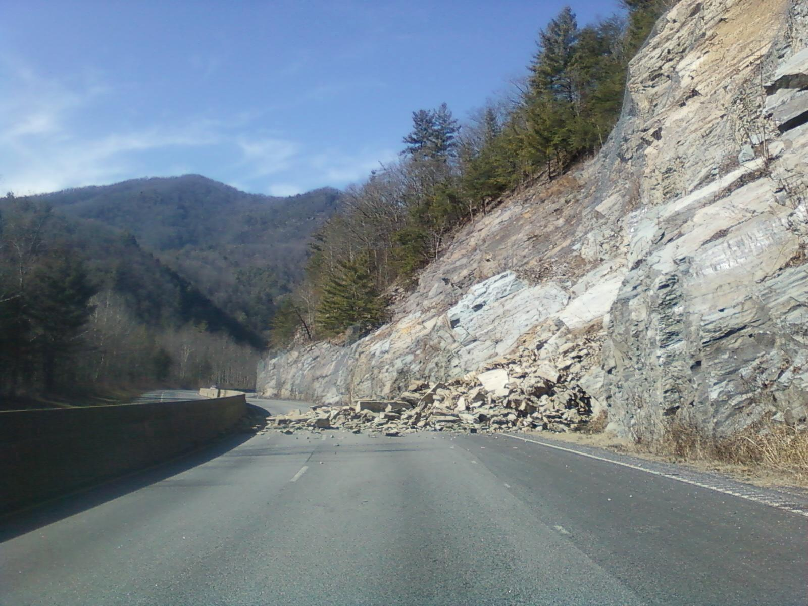
In a slide, a soil or rock mass moves downslope either on a surface of rupture or on a thin zone of intense shear strain. Slides can be rotational (curved surface) or translational (planar surface). Both types can be caused by intense rainfall or by rises in groundwater due to flooding, irrigation, and rises in stream levels.
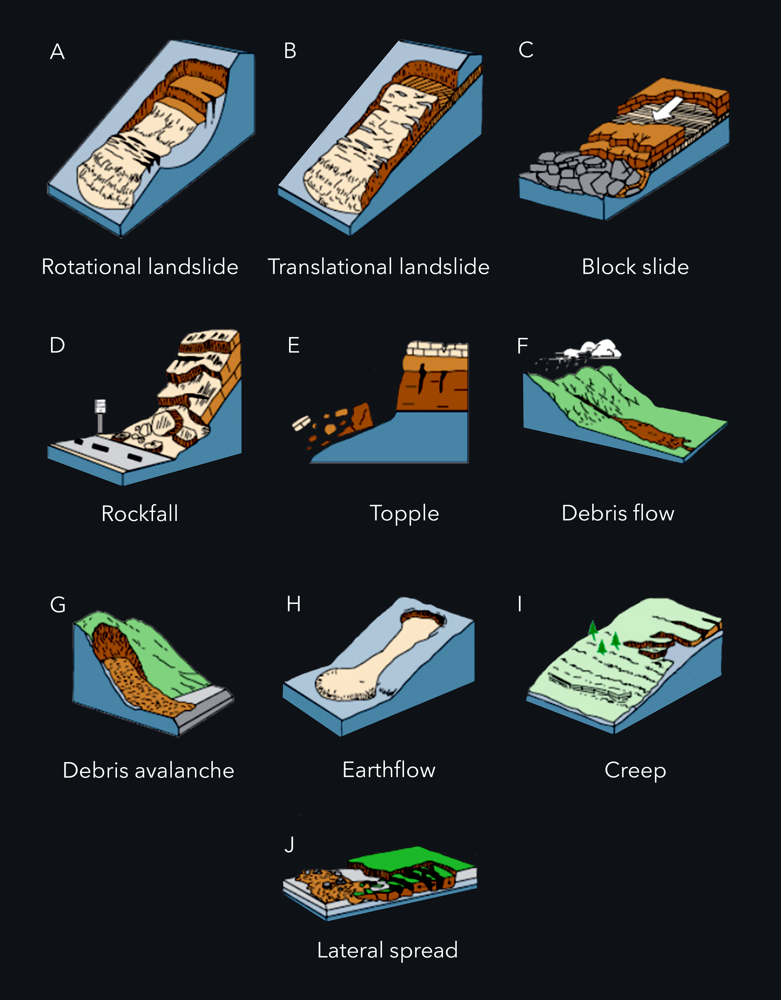
This diagram from the U.S. Geological Survey illustrates all five major categories of slope movement — slides (A,B,C), fall (D), topple (E), flows (F,G,H,I), and spread (J) — and their subdivisions. Source: USGS Fact Sheet 2004-3072.

These slope movements are further subdivided by the type of geologic material involved: bedrock, debris, or earth (a combination of rock and soil). The type of movement and material involved determines the potential speed of the landslide and the distance it will travel, as well as the volume of displaced material and possible impacts.
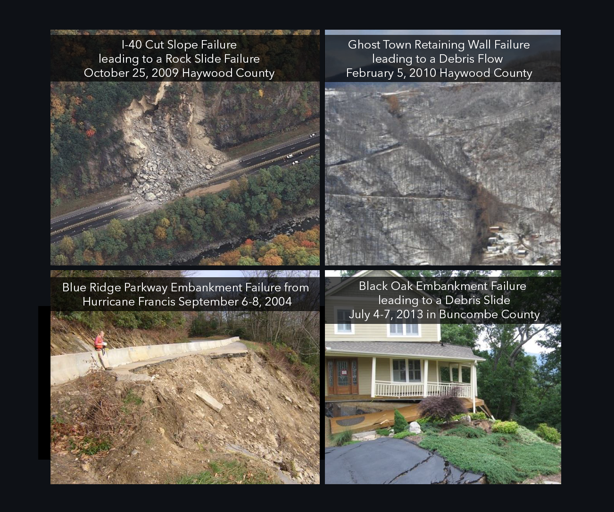
Every landslide, or slope movement, is unique and often unpredictable. Landslide events are best evaluated on a case-by-case basis. Examples include debris flows, debris slides, and rock slides — each with different behavior based on material composition and water content.
Fall (D) — During a fall, rock or soil detaches from a slope and descends rapidly by falling, bouncing, or rolling. Falls occur on steep slopes and are triggered by undercutting, weathering, human activity, or earthquakes.
Topple (E) — A mass of soil or rock that rotates forward out of a slope. Triggered by water or ice in cracks, vibration, undercutting, and stream erosion.
Flow (F,G,H,I) — A continuous movement of material down a slope that resembles a fluid. Includes debris flows, debris avalanches, earthflows, and creeps.
Spread (J) — A spread occurs when a mass of soil or rock expands as the fractured mass sinks into soft underlying material. Typically occurs in flat or gently sloping landscapes.
Anatomy of a Landslide
Multiple debris flows can happen in the same location. These create features called "composites." Debris flows can become inactive, and older debris flows can reactivate.
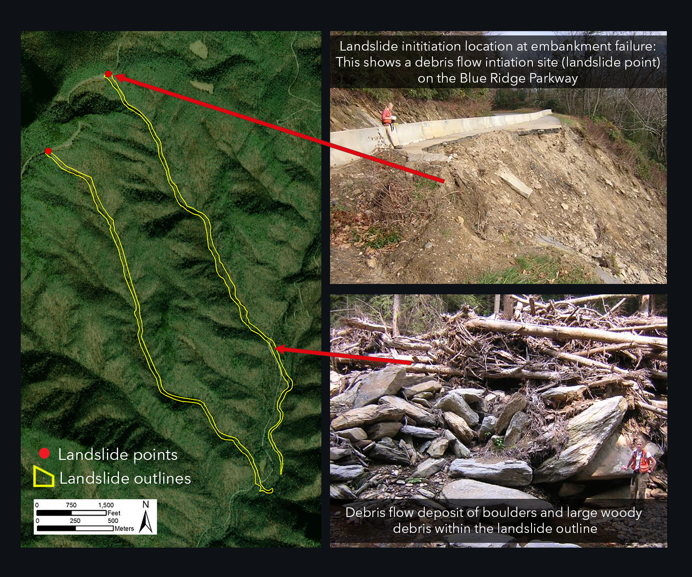
Multiple debris flows can happen in the same location, creating features called "composites." Debris flows can become inactive, and older debris flows can reactivate. Understanding composite features helps geologists identify areas with repeated landslide history.
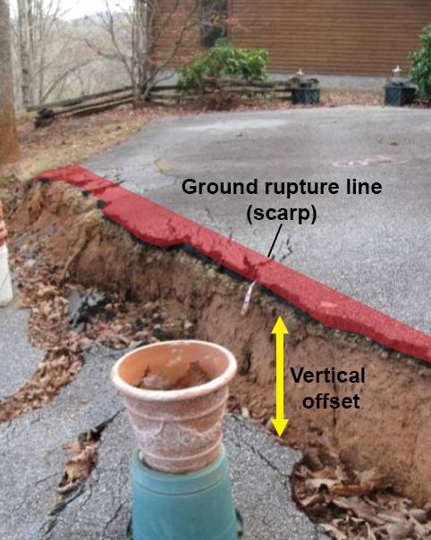
A scarp is the edge of a steep slope of a debris flow, and an initiation zone (or process point) is where a debris flow initiates. The red area shows ground rupture lines at the upper edge of the vertical offset along the scarp.

The diagrams show the anatomy of a debris flow (left) and a cross section of a rock slide (right). Key features include the initiation zone, transport zone, and deposition zone — each playing a different role in how material moves and where it accumulates.
Common Landslide Types
Common landslide types (or slope movements) in western North Carolina include debris flows, debris and earth slides, and rock slides.
Debris Flows
Debris flows are rapidly flowing mixtures of soil, rock particles, and water that are often referred to as "mudslides." This is the most common type of the 3,290 landslides that occurred before June 30, 2011, in western North Carolina. Because of the low cohesion of the soil mass, debris flows can "liquefy" in heavy rains and move rapidly at speeds approaching 30 miles per hour.
Debris flows often begin in depressions, hollows, the headwaters of mountain streams, and in areas where bedrock is overlaid with a thin layer of soil that is, at most, six feet deep.
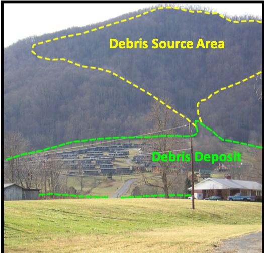
Debris and Earth Slides
Debris (soil-rock mixture) or earth (clay-silt soil) slides move at a slower rate than debris flows because the water content is too low for the mass to liquefy. High clay content can cause material to be more cohesive and therefore move at a slower rate — typically several inches or feet per day.
After the initial movement of a debris or earth slide opens tension cracks and scarps, water infiltrates deeper into the mass. In wet weather, movement can become self-perpetuating as additional water further destabilizes the material.
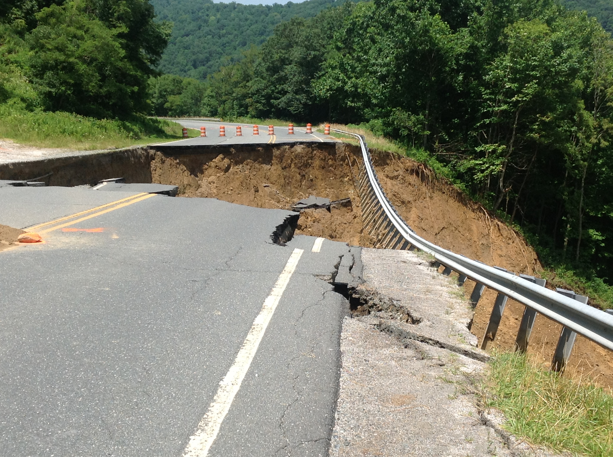
Rockslides and Rockfalls
Rockslides and rockfalls usually occur along roadways, but can occur on any modified or natural rock slope. They occur on steep, exposed faces made of bedrock or boulder-rich rock deposits. In western North Carolina, rockslides are common along major transportation routes and have resulted in significant direct and indirect costs.
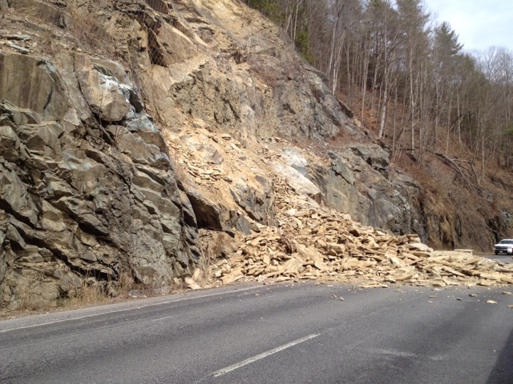
Where Do Landslides Occur?

Landslides can take place almost anywhere in the world in a variety of landscapes—including cultivated lands, slopes, and forests—and do not necessarily happen on steep slopes. However, certain types of landslides are associated with hilly and mountainous terrain.
Natural patterns like climate, wildfire, and the courses of streams and rivers also influence where landslides occur, as do human activities such as clearing trees and vegetation and construction on slopes.
Some types of landslide only occur in specific terrains or in the presence of particular geologic materials. Debris torrents take place in channels and ravines, and rockfalls occur on steep, exposed faces made of bedrock or boulder-rich rock deposits.
What Causes Landslides?
Landslides are triggered primarily by natural occurrences—including rain, melting snow, changes in water level, stream erosion, changes in groundwater, earthquakes, and volcanoes—and by human activity. Factors such as soil type, landform, and geology also influence landslide events.

Heavy rainfall and the subsequent increase in groundwater is a common trigger for landslides in western North Carolina. Widespread development of landslides coincides with major rainfall events, particularly those that occur as the remnants of tropical storms pass into the mountains.
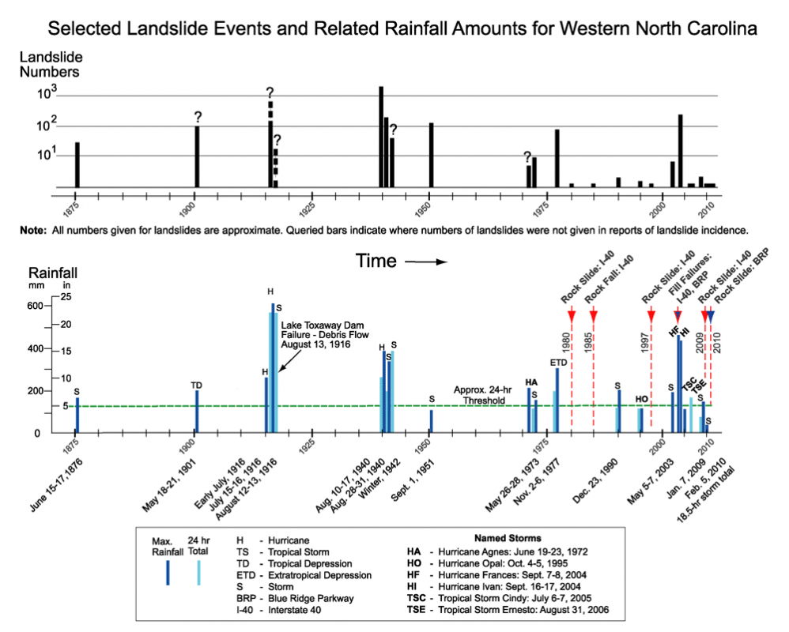
Widespread development of landslides coincides with major rainfall events, particularly rainfall events that occur as the remnants of tropical storms pass into the mountains of western North Carolina.
The chart combines data on the dates and amount of rainfall (blue lines, lower graph) and the dates and number of landslides (black lines, upper graph) in western North Carolina between 1876 and 2010. The strong correlation between major rainfall events and landslide occurrences is clearly visible.
Widespread occurrence: typically when 10+ inches of rain falls within 24 hours.
Localized occurrence: typically when at least 5 inches falls within 24 hours.
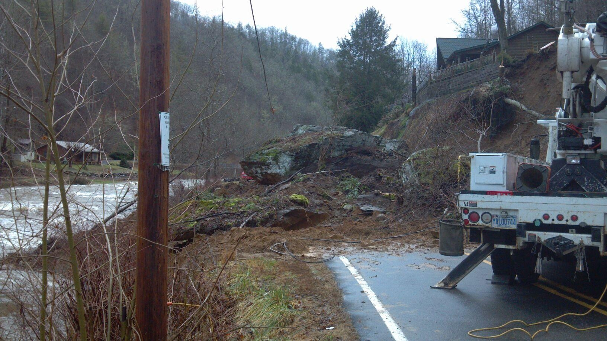
Human activities that contribute to landslides include altering drainage patterns, clearing vegetation, and destabilizing slopes by undercutting a slope bottom and/or loading the top beyond its bearing strength.
- Altering drainage patterns and clearing vegetation
- Irrigation, draining or creating reservoirs, improper slope excavation
- Lack of compaction during construction; inadequate ground surface preparation

Field investigations have determined that many debris flows and landslides have occurred where slope modification by humans was a contributing factor. The majority were fill failures that mobilized into damaging debris flows and debris slides.
For areas already mapped for landslide hazards, there is a strong correlation between areas identified as having increased potential for debris flows and landslides that have actually occurred.
Landslides and debris flows usually occur in areas where they've happened before.

In western North Carolina, correlations between rainfall and debris flow events indicate that on slopes modified by human activity, debris flows can be triggered by rainfall events with lower rates and durations than rainfall events that trigger debris flows on unmodified slopes.
Landslides have been triggered by three inches of rainfall or less in a 24-hour period on slopes modified by human activity that had pre-existing signs of instability.
Activities that contribute to slope instability include:
- Lack of compaction during construction
- Inadequate ground surface preparation
- Large woody debris
- Incorporation of untreated acid-producing rock into embankments
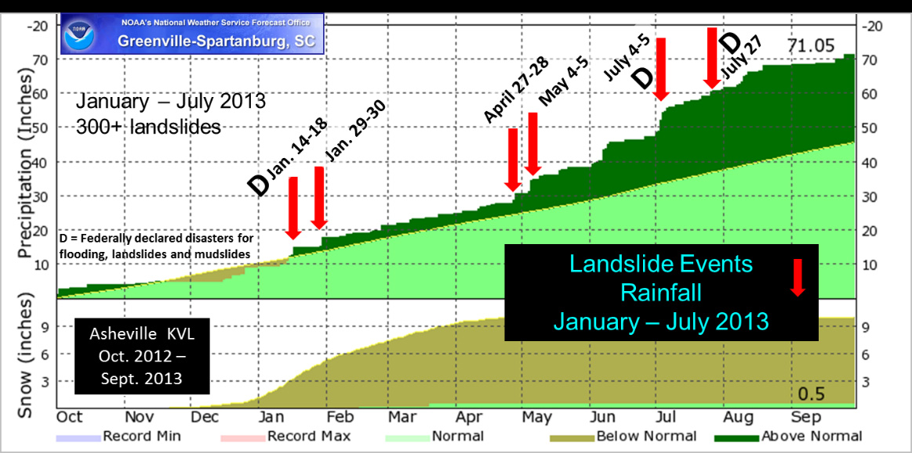
Rainfall intensity and duration is an important factor in triggering debris flows. From January to July 2013, multiple above-normal rainfall events caused significant landslides in the Asheville area. Six storm events triggered slope failures in western North Carolina between January and July 2013 during a long period of above-normal rainfall.
Landslide Hazard Maps
The landslide hazard mapping program is intended to provide the public, local government, and state emergency agencies with a planning tool indicating areas where landslides have occurred in the past and those areas vulnerable to future slope movements.
Data Description: The data produced by the landslide hazard mapping program are described in the maps below. Browse the data to learn landslide terminology and how they contribute to understanding landslide events in western North Carolina.
Note: The maps below are static. You can interactively explore the data in the WNC Landslide Hazard Data Viewer, which allows you to click on each element to learn additional information.
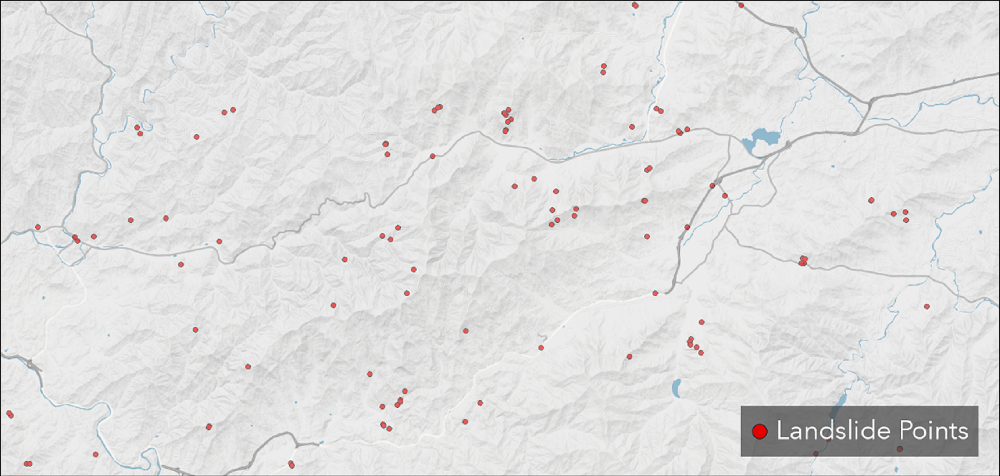
Landslide points identify the initiation (source) of slope movements. Attributes include descriptions of slope movement type, location, dimensions, movement dates, and geomorphic, hydrologic, and other site data for individual slope movements, where known.
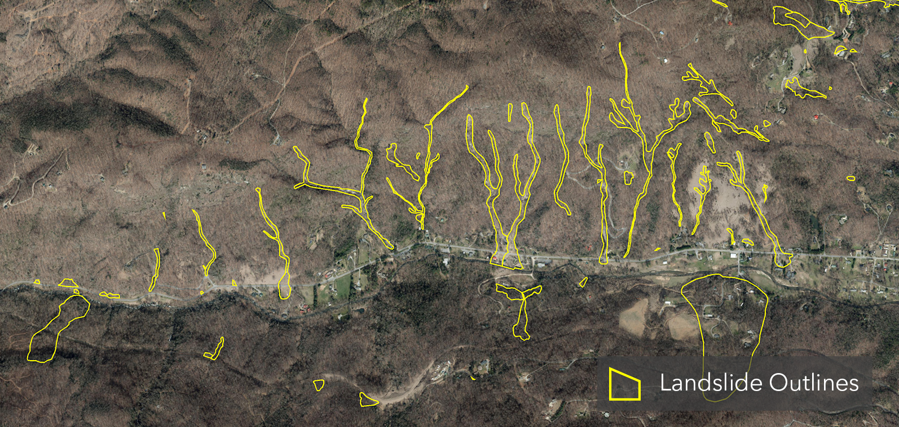
Landslide outlines show the approximate areal extents of relatively recent, individual slope movements where their initiation (source) areas are known. Outlines were determined from field investigations, aerial photography (1940–current), and digital maps derived from LiDAR digital elevation models.
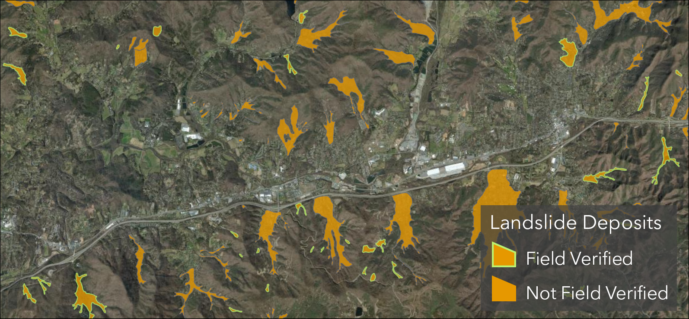
Landslide deposits represent the areal extents of significant volumes of earth, debris, and rock fragments that have accumulated primarily as a result of past debris flows and debris slides. These deposits indicate areas that can be affected by future landslides. Debris flow deposits mainly occur in valleys and can transition upslope into debris slide, rock fall, and rock slide deposits nearer steep source areas.
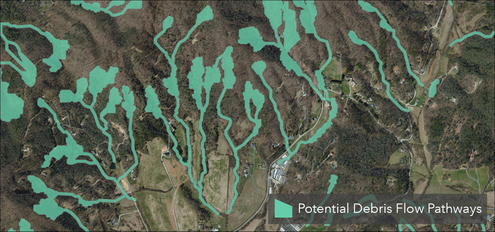
The Potential Debris Flow Pathways layer shows where landslides have gone in the past—and where they might go in the future—by delineating areas likely to be in the path of potential slope movements. While areas outside the green pathway areas are unlikely to be damaged by landslide activity, modification of slopes could result in slope movements outside the marked areas.
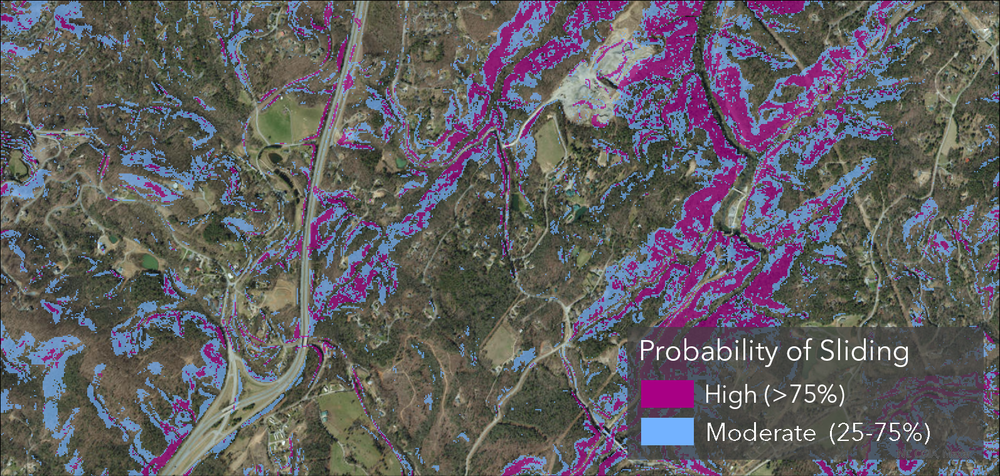
The Probability of Sliding map is a susceptibility map indicating where landslides may initiate. The predicted relative hazard rankings (High and Moderate) indicate susceptibility of the initiation of naturally occurring, shallow, translational slope movements in response to a rain event of approximately 5–6 inches or more within a 24-hour period.
The data on this map does not predict that shallow translational slope movements will occur; rather, it forecasts, if they do occur, where they are more likely to initiate given the assumptions and input parameters used in the production of this data.
Learn More
Explore historical landslide events and more in StoryMaps, access digital copies of printed educational materials, and access tools and resources on the project website.
To explore the regional landslide data, visit the interactive WNC Landslide Hazard Data Viewer, which displays data for all counties in western North Carolina that have been mapped to date.
Acknowledgments
References
Unless otherwise noted, all images and maps were provided or created by the North Carolina Geological Survey or UNC Asheville's NEMAC. Image credits are listed below in order of appearance.
- Hero image: "Wintergreen - Blue Ridge Mountains" — Dave Buchhofer, CC BY-NC-ND 2.0, via Flickr
- Key Messages — Rockslide images (×2): "Rockslide near Mile Marker 7 on I-40" — NCDOT Communications, CC BY-NC 2.0, via Flickr
- Key Messages — Forest slide: "NC28_Graham_slide_oblique" — NCDOT Communications, CC BY-NC 2.0, via Flickr
- Key Messages — Mountain panorama: "Roan Mountain (Round Bald) panorama with rain" — Dallas Krentzel, CC BY 2.0, via Flickr
- What is a Landslide? — Types diagram: "Figure 3," in Landslide Types and Processes Fact Sheet 2004-3072 — U.S. Geological Survey (public domain)
- Common Landslide Types — Rockslide: "Rockslide near Mile Marker 7 on I-40" — NCDOT Communications, CC BY 2.0, via Flickr
- Where Do Landslides Occur? — Polk County: "IMG_5620" — NCDOT Communications, CC BY 2.0, via Flickr
- What Causes Landslides? — Landscape: "Roan Mountain (Round Bald) panorama with rain" — Dallas Krentzel, CC BY 2.0, via Flickr
- What Causes Landslides? — Slope modification: "I-40 West Rockslide - Haywood Co." — NCDOT Communications, CC BY 2.0, via Flickr
- All maps, diagrams, and other images not credited above — NC Geological Survey / UNC Asheville NEMAC (public information)
- Landslide Types and Causes | Recognizing Landslides — NC Department of Environmental Quality | NC Geological Survey